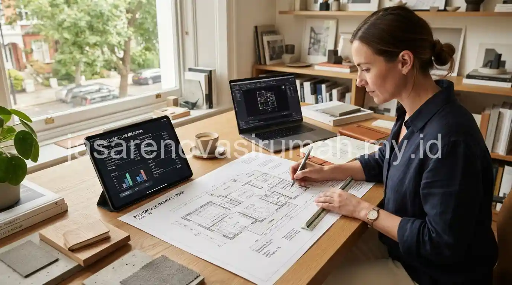
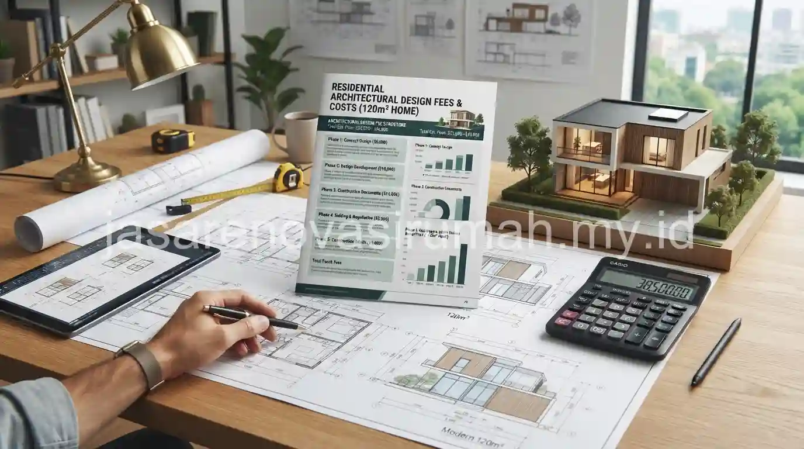

Tarif jasa arsitek di Malang umumnya mengacu pada pedoman standar minimal Ikatan Arsitek Indonesia (IAI), dihitung berdasarkan persentase dari total nilai investasi bangunan, bukan sekadar tarif flat per meter persegi seperti yang sering disangka banyak orang. Memahami cara perhitungan ini penting agar pemilik lahan bisa menyiapkan anggaran perancangan secara realistis sebelum berkonsultasi dengan arsitek pilihan.
Bagaimana Sistem Perhitungan Tarif Arsitek Berdasarkan Standar IAI?
Sistem tarif IAI umumnya menggunakan persentase dari nilai total konstruksi bangunan, dengan persentase yang menurun seiring bertambah besarnya skala proyek, karena kompleksitas per meter perseginya relatif berkurang pada proyek besar.
Berikut gambaran umum kisaran persentase yang biasa dijadikan acuan, meski nilai pasti tetap bergantung pada kesepakatan dengan arsitek yang bersangkutan:
| Skala Proyek | Kisaran Persentase dari Nilai Konstruksi | Karakteristik |
|---|---|---|
| Rumah tinggal sederhana | 5% - 7% | Desain standar, tipe rumah umum |
| Rumah tinggal menengah-custom | 7% - 10% | Kebutuhan ruang khusus, tingkat kustomisasi lebih tinggi |
| Rumah mewah/kompleksitas tinggi | 10% - 15% | Detail material premium, ruang khusus, koordinasi lebih intensif |
Persentase ini biasanya sudah mencakup honor perancangan dari tahap konsep hingga gambar kerja, namun cakupan pendampingan pelaksanaan atau pengawasan berkala terkadang dihitung terpisah, sehingga penting untuk menanyakan rincian ini secara jelas sebelum menandatangani kesepakatan kerja dengan arsitek.
Seperti Apa Simulasi Biaya Desain untuk Rumah Seluas 120 Meter Persegi?
Simulasi biaya desain arsitek untuk rumah seluas 120 meter persegi dihitung dengan mengalikan estimasi nilai konstruksi total dengan persentase tarif yang disepakati, bukan dihitung langsung dari luas bangunan semata.
Berikut contoh simulasi perhitungan sederhana:
- Luas bangunan: 120 meter persegi.
- Estimasi biaya konstruksi kelas menengah: sekitar Rp 5.000.000 per meter persegi.
- Estimasi nilai investasi bangunan: 120 m2 x Rp 5.000.000 = Rp 600.000.000.
- Jika disepakati tarif arsitek sebesar 7 persen dari nilai konstruksi: Rp 600.000.000 x 7% = Rp 42.000.000.
- Jika disepakati tarif sebesar 10 persen untuk tingkat kustomisasi lebih tinggi: Rp 600.000.000 x 10% = Rp 60.000.000.
Simulasi ini menunjukkan bahwa biaya jasa arsitek sangat bergantung pada asumsi nilai konstruksi yang digunakan. Semakin tinggi kelas material yang direncanakan, semakin besar pula nilai konstruksi dan otomatis honor arsitek yang dihitung dari persentase tersebut. Untuk gambaran kisaran biaya konstruksi per meter persegi yang bisa dijadikan dasar simulasi, Anda dapat mempelajari lebih lanjut pada panduan cara menghitung estimasi biaya renovasi rumah Malang, meski konteksnya lebih condong pada renovasi, prinsip perhitungan nilai konstruksi pada dasarnya serupa untuk pembangunan baru.

Apa Saja yang Termasuk dalam Lingkup Pekerjaan Arsitek Sesuai Tarif yang Dibayarkan?
Lingkup pekerjaan yang tercakup dalam tarif standar umumnya meliputi tahap konsep desain, pengembangan desain, hingga penyusunan gambar kerja yang siap digunakan sebagai acuan kontraktor.
Berikut rincian umum lingkup pekerjaan yang biasa tercakup dalam tarif arsitek:
| Tahap Pekerjaan | Cakupan | Umumnya Termasuk dalam Tarif Dasar |
|---|---|---|
| Konsep desain | Sketsa awal denah dan tampak | Ya |
| Pengembangan desain | Render 3D dan penyesuaian material | Ya |
| Gambar kerja | Denah, potongan, detail konstruksi | Ya |
| Dokumen tender/RAB | Rincian spesifikasi untuk penawaran kontraktor | Terkadang termasuk, tergantung kesepakatan |
| Pendampingan pelaksanaan | Kunjungan berkala pengawasan proyek | Umumnya dihitung terpisah |
Karena variasi cakupan ini cukup umum terjadi di lapangan, sebaiknya calon klien menanyakan secara spesifik item apa saja yang termasuk dalam penawaran tarif yang diberikan arsitek, termasuk jumlah revisi desain yang diperbolehkan sebelum dikenakan biaya tambahan.
Baca Juga: Ide Desain Rumah Minimalis Modern Terbaru
Mengapa Tarif Arsitek Tidak Bisa Disamakan dengan Tarif Flat per Meter Persegi?
Tarif arsitek yang dihitung berdasarkan persentase nilai konstruksi lebih mencerminkan kompleksitas dan tanggung jawab pekerjaan dibanding tarif flat per meter persegi yang tidak mempertimbangkan tingkat kerumitan desain.
Sebagai ilustrasi, mendesain rumah seluas 100 meter persegi dengan spesifikasi sederhana tentu membutuhkan waktu dan detail pekerjaan yang berbeda dibanding mendesain rumah dengan luas sama namun spesifikasi material premium dan kebutuhan ruang khusus seperti home theater atau kolam renang. Sistem persentase mengakomodasi perbedaan kompleksitas ini secara lebih proporsional dibanding tarif flat yang menyamaratakan semua jenis proyek.
Meski demikian, di lapangan tidak sedikit arsitek independen atau biro kecil yang menawarkan skema tarif flat per meter persegi untuk proyek rumah tinggal standar, terutama untuk mempermudah estimasi awal bagi klien. Kedua skema ini sama-sama sah selama disepakati secara tertulis dan jelas cakupannya sejak awal.
Bagaimana Cara Menegosiasikan Tarif Arsitek Secara Wajar?
Negosiasi tarif arsitek sebaiknya difokuskan pada kejelasan lingkup pekerjaan dan jumlah revisi yang disediakan, bukan semata-mata menekan angka persentase tanpa mempertimbangkan kualitas layanan yang akan diterima.
Beberapa hal yang bisa didiskusikan saat negosiasi tarif:
- Jumlah sesi revisi desain yang termasuk dalam tarif dasar sebelum dikenakan biaya tambahan.
- Kejelasan apakah dokumen RAB dan pendampingan tender termasuk dalam penawaran awal.
- Skema pembayaran bertahap sesuai progres pekerjaan, misalnya di setiap tahap konsep, pengembangan desain, dan gambar kerja selesai.
- Cakupan dan frekuensi kunjungan pengawasan bila pendampingan pelaksanaan turut disepakati.
Pendekatan ini lebih sehat dibanding hanya berfokus pada angka nominal, karena arsitek yang merasa dihargai secara wajar biasanya juga lebih berkomitmen memberikan detail dan ketelitian ekstra pada proyek Anda.
Kesalahan Umum Saat Menghitung Anggaran Tarif Jasa Arsitek
Kesalahan yang paling sering terjadi adalah menyamakan tarif arsitek dengan biaya konstruksi itu sendiri, padahal keduanya adalah komponen anggaran yang terpisah dan harus dihitung masing-masing.
Kesalahan lain yang perlu dihindari:
- Tidak menanyakan secara jelas apakah tarif yang ditawarkan sudah termasuk pajak atau belum.
- Mengabaikan kesepakatan tertulis mengenai jumlah revisi desain yang diperbolehkan.
- Memilih arsitek hanya berdasarkan tarif termurah tanpa mempertimbangkan pengalaman dan portofolio.
- Tidak menyiapkan anggaran terpisah untuk pendampingan pelaksanaan bila dibutuhkan selama proses pembangunan.
Pada akhirnya, memahami sistem tarif arsitek berdasarkan standar IAI membantu pemilik lahan menyiapkan anggaran perancangan secara lebih realistis, sekaligus menghindari kesalahpahaman soal cakupan pekerjaan yang akan diterima. Jika Anda sudah memiliki gambaran kebutuhan desain rumah di Malang, langkah selanjutnya adalah berkonsultasi langsung dengan jasa arsitek Malang kami untuk mendapatkan penawaran tarif yang transparan sesuai skala dan kompleksitas proyek Anda.

Ainur Reza
Penulis Profesional & Praktisi Konstruksi
Ainur Reza adalah seorang penulis profesional yang memiliki ketertarikan mendalam pada dunia arsitektur dan konstruksi. Dengan pengalaman bertahun-tahun mengamati tren renovasi rumah, ia aktif membagikan panduan praktis, tips RAB, dan wawasan seputar material bangunan untuk membantu pemilik rumah mewujudkan hunian impian mereka dengan anggaran yang efisien.